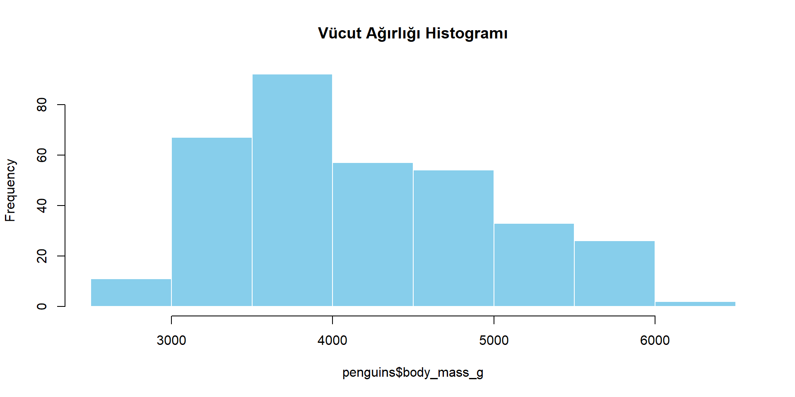
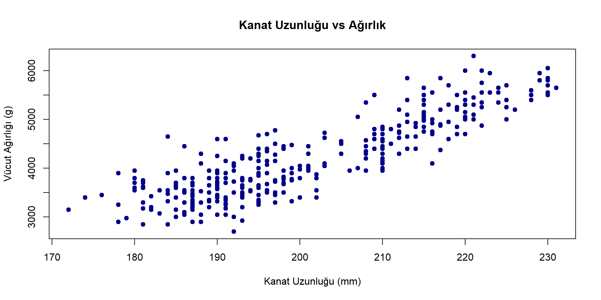
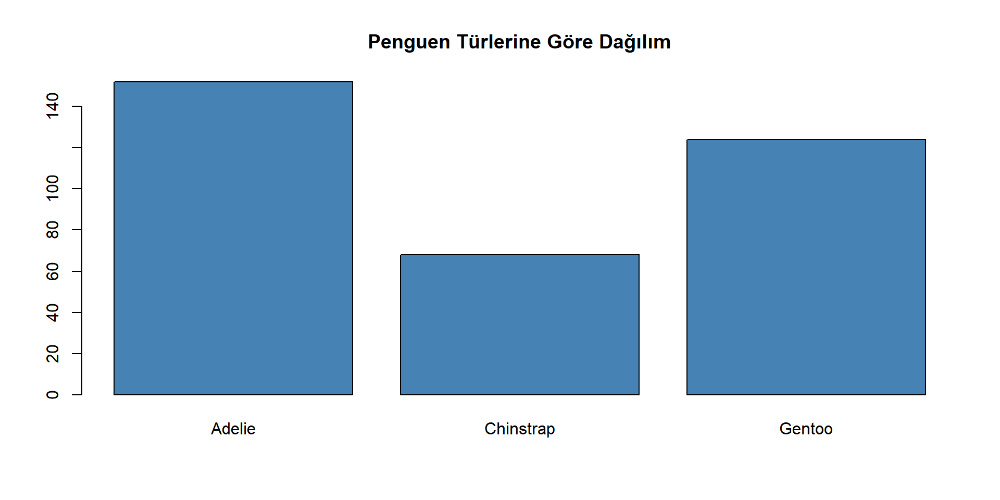
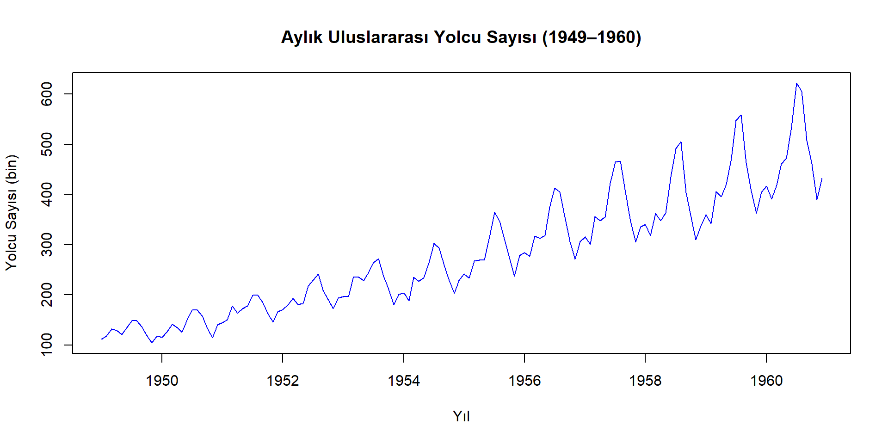
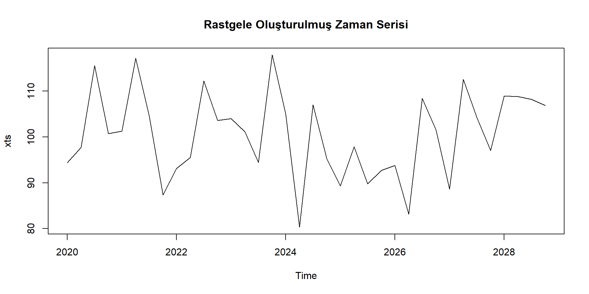

R Programlama ile Veri Analizi
Keşifçi Veri Analizi
16-05-2025
Sunum Planı
- Keşifçi Veri Analizi
- Veri ile Tanışma
- Sürekli Değişkenler
- Kategorik Değişkenler
- Zaman Serileri
📦 Ders Materyalleri: https://github.com/MFatihTuzen/UYIK-R
Keşifçi Veri Analizi Nedir?
- Keşifçi Veri Analizi (EDA), bir veri kümesini önyargısız şekilde inceleyerek veri yapısını, eğilimleri ve olağandışı durumları ortaya çıkarmaya odaklanır.
- Amaç: veri hakkında soru sormak, anlam çıkarmak, hipotez üretmek ve modelleme öncesi içgörü kazanmak.
📌 “Modellemeden önce veriye saygı göster.” – Hadley Wickham
Neden Keşifçi Veri Analizi?
- Veriyi tanımadan analiz yapılamaz.
- Hatalı veri → hatalı sonuç → hatalı karar.
- Dağılım, aykırı değer, eksiklik gibi yapıları önceden bilmek gerekir.
🧠 Kazanımlar:
- Değişkenlerin yapısını anlama
- Değişkenler arası ilişkileri görselleştirme
- Aykırı değerleri tespit etme
- Temizleme ve dönüştürme stratejileri geliştirme
Tavsiye Edilen Kaynaklar
- 📘 R for Data Science – Wickham & Grolemund (Bölüm 7–10)
- 📘 Exploratory Data Analysis with R – Roger Peng
- 📦 Paketler:
dplyr,ggplot2,skimr,janitor,DataExplorer,GGally,summarytools
Veri Seti: palmerpenguins::penguins
palmerpenguinsveri seti, Antarktika’daki 3 penguen türüne ait biyolojik ölçümler içerir.- Hem sürekli hem de kategorik değişkenler içerdiği için keşifçi veri analizine çok uygundur.
- Doğrudan kullanılabilir – temiz, eksiksiz ve anlamlıdır.
Neden penguins?
Öğretici: görselleştirme, gruplama, özetleme için ideal
Hızlı: büyük değil ama analiz için yeterli
Dengeli: sürekli ve kategorik değişkenler uyumlu
Temiz: veri hazırlığı gerektirmez
İlgi çekici: öğrencilerin ilgisini çeker 🐧
Değişkenler
| Değişken | Açıklama | Tür |
|---|---|---|
species |
Tür (Adelie, Gentoo, Chinstrap) | Kategorik |
island |
Bulunduğu ada | Kategorik |
bill_length_mm |
Gaga uzunluğu | Sürekli |
bill_depth_mm |
Gaga derinliği | Sürekli |
flipper_length_mm |
Kanat uzunluğu | Sürekli |
body_mass_g |
Vücut ağırlığı | Sürekli |
sex |
Cinsiyet | Kategorik |
year |
Ölçüm yılı | Kategorik |
Veriyi Yükleyelim
👁️🗨️ İlk Bakış
# A tibble: 6 × 8
species island bill_length_mm bill_depth_mm flipper_length_mm body_mass_g
<fct> <fct> <dbl> <dbl> <int> <int>
1 Adelie Torgersen 39.1 18.7 181 3750
2 Adelie Torgersen 39.5 17.4 186 3800
3 Adelie Torgersen 40.3 18 195 3250
4 Adelie Torgersen NA NA NA NA
5 Adelie Torgersen 36.7 19.3 193 3450
6 Adelie Torgersen 39.3 20.6 190 3650
# ℹ 2 more variables: sex <fct>, year <int>tibble [344 × 8] (S3: tbl_df/tbl/data.frame)
$ species : Factor w/ 3 levels "Adelie","Chinstrap",..: 1 1 1 1 1 1 1 1 1 1 ...
$ island : Factor w/ 3 levels "Biscoe","Dream",..: 3 3 3 3 3 3 3 3 3 3 ...
$ bill_length_mm : num [1:344] 39.1 39.5 40.3 NA 36.7 39.3 38.9 39.2 34.1 42 ...
$ bill_depth_mm : num [1:344] 18.7 17.4 18 NA 19.3 20.6 17.8 19.6 18.1 20.2 ...
$ flipper_length_mm: int [1:344] 181 186 195 NA 193 190 181 195 193 190 ...
$ body_mass_g : int [1:344] 3750 3800 3250 NA 3450 3650 3625 4675 3475 4250 ...
$ sex : Factor w/ 2 levels "female","male": 2 1 1 NA 1 2 1 2 NA NA ...
$ year : int [1:344] 2007 2007 2007 2007 2007 2007 2007 2007 2007 2007 ... species island bill_length_mm bill_depth_mm
Adelie :152 Biscoe :168 Min. :32.10 Min. :13.10
Chinstrap: 68 Dream :124 1st Qu.:39.23 1st Qu.:15.60
Gentoo :124 Torgersen: 52 Median :44.45 Median :17.30
Mean :43.92 Mean :17.15
3rd Qu.:48.50 3rd Qu.:18.70
Max. :59.60 Max. :21.50
NA's :2 NA's :2
flipper_length_mm body_mass_g sex year
Min. :172.0 Min. :2700 female:165 Min. :2007
1st Qu.:190.0 1st Qu.:3550 male :168 1st Qu.:2007
Median :197.0 Median :4050 NA's : 11 Median :2008
Mean :200.9 Mean :4202 Mean :2008
3rd Qu.:213.0 3rd Qu.:4750 3rd Qu.:2009
Max. :231.0 Max. :6300 Max. :2009
NA's :2 NA's :2 💡 penguins veri seti iris’in modern, çok boyutlu ve daha gerçekçi bir versiyonu gibidir.
🧭 Veri ile Tanışma
Bu bölümde:
Veriyi ilk kez görme
Yapısını anlama
Eksiklikleri fark etme
İlk istatistiksel özetlemeler
Gözlemleri ve değişkenleri sayma
…gibi temel ama çok önemli adımları işleyeceğiz.
🧭 Veri ile Tanışma – İlk Adımlar
Bir veriyle ilk karşılaştığınızda sormanız gereken sorular:
- 📏 Kaç gözlem (satır) ve kaç değişken (sütun) var?
- 🔠 Değişken türleri neler?
- ❓ Eksik veri var mı?
- 🔁 Kayıtlar benzersiz mi?
- 👁️ İlk bakışta dikkat çeken bir durum var mı?
Veri Yapısını Gözlemlemek
tibble [344 × 8] (S3: tbl_df/tbl/data.frame)
$ species : Factor w/ 3 levels "Adelie","Chinstrap",..: 1 1 1 1 1 1 1 1 1 1 ...
$ island : Factor w/ 3 levels "Biscoe","Dream",..: 3 3 3 3 3 3 3 3 3 3 ...
$ bill_length_mm : num [1:344] 39.1 39.5 40.3 NA 36.7 39.3 38.9 39.2 34.1 42 ...
$ bill_depth_mm : num [1:344] 18.7 17.4 18 NA 19.3 20.6 17.8 19.6 18.1 20.2 ...
$ flipper_length_mm: int [1:344] 181 186 195 NA 193 190 181 195 193 190 ...
$ body_mass_g : int [1:344] 3750 3800 3250 NA 3450 3650 3625 4675 3475 4250 ...
$ sex : Factor w/ 2 levels "female","male": 2 1 1 NA 1 2 1 2 NA NA ...
$ year : int [1:344] 2007 2007 2007 2007 2007 2007 2007 2007 2007 2007 ...glimpse(penguins) # Değişken adları ve türleri, str fonksiyonuna göre daha okunabilir biçimde gösterirRows: 344
Columns: 8
$ species <fct> Adelie, Adelie, Adelie, Adelie, Adelie, Adelie, Adel…
$ island <fct> Torgersen, Torgersen, Torgersen, Torgersen, Torgerse…
$ bill_length_mm <dbl> 39.1, 39.5, 40.3, NA, 36.7, 39.3, 38.9, 39.2, 34.1, …
$ bill_depth_mm <dbl> 18.7, 17.4, 18.0, NA, 19.3, 20.6, 17.8, 19.6, 18.1, …
$ flipper_length_mm <int> 181, 186, 195, NA, 193, 190, 181, 195, 193, 190, 186…
$ body_mass_g <int> 3750, 3800, 3250, NA, 3450, 3650, 3625, 4675, 3475, …
$ sex <fct> male, female, female, NA, female, male, female, male…
$ year <int> 2007, 2007, 2007, 2007, 2007, 2007, 2007, 2007, 2007…[1] "species" "island" "bill_length_mm"
[4] "bill_depth_mm" "flipper_length_mm" "body_mass_g"
[7] "sex" "year" [1] 344 8# A tibble: 6 × 8
species island bill_length_mm bill_depth_mm flipper_length_mm body_mass_g
<fct> <fct> <dbl> <dbl> <int> <int>
1 Adelie Torgersen 39.1 18.7 181 3750
2 Adelie Torgersen 39.5 17.4 186 3800
3 Adelie Torgersen 40.3 18 195 3250
4 Adelie Torgersen NA NA NA NA
5 Adelie Torgersen 36.7 19.3 193 3450
6 Adelie Torgersen 39.3 20.6 190 3650
# ℹ 2 more variables: sex <fct>, year <int># A tibble: 6 × 8
species island bill_length_mm bill_depth_mm flipper_length_mm body_mass_g
<fct> <fct> <dbl> <dbl> <int> <int>
1 Chinstrap Dream 45.7 17 195 3650
2 Chinstrap Dream 55.8 19.8 207 4000
3 Chinstrap Dream 43.5 18.1 202 3400
4 Chinstrap Dream 49.6 18.2 193 3775
5 Chinstrap Dream 50.8 19 210 4100
6 Chinstrap Dream 50.2 18.7 198 3775
# ℹ 2 more variables: sex <fct>, year <int>💡 glimpse() fonksiyonu dplyr paketine aittir ve str() fonksiyonunun daha okunabilir bir versiyonudur.
Eksik Veriye Bakış
species island bill_length_mm bill_depth_mm
Adelie :152 Biscoe :168 Min. :32.10 Min. :13.10
Chinstrap: 68 Dream :124 1st Qu.:39.23 1st Qu.:15.60
Gentoo :124 Torgersen: 52 Median :44.45 Median :17.30
Mean :43.92 Mean :17.15
3rd Qu.:48.50 3rd Qu.:18.70
Max. :59.60 Max. :21.50
NA's :2 NA's :2
flipper_length_mm body_mass_g sex year
Min. :172.0 Min. :2700 female:165 Min. :2007
1st Qu.:190.0 1st Qu.:3550 male :168 1st Qu.:2007
Median :197.0 Median :4050 NA's : 11 Median :2008
Mean :200.9 Mean :4202 Mean :2008
3rd Qu.:213.0 3rd Qu.:4750 3rd Qu.:2009
Max. :231.0 Max. :6300 Max. :2009
NA's :2 NA's :2 [1] TRUE species island bill_length_mm bill_depth_mm
0 0 2 2
flipper_length_mm body_mass_g sex year
2 2 11 0 💡 summary() sadece sayısal değil, kategorik değişkenlerin seviyelerini de gösterir.
Kayıtlar Tekil mi?
💡 Eğer nrow() sayıları farklıysa veri setinde kopya kayıtlar vardır.
💡 Aynı kayıtlar tekrar ediyorsa analiz sonuçları yanıltıcı olabilir.
[1] FALSE FALSE FALSE FALSE FALSE FALSE FALSE FALSE FALSE FALSE FALSE FALSE
[13] FALSE FALSE FALSE FALSE FALSE FALSE FALSE FALSE FALSE FALSE FALSE FALSE
[25] FALSE FALSE FALSE FALSE FALSE FALSE FALSE FALSE FALSE FALSE FALSE FALSE
[37] FALSE FALSE FALSE FALSE FALSE FALSE FALSE FALSE FALSE FALSE FALSE FALSE
[49] FALSE FALSE FALSE FALSE FALSE FALSE FALSE FALSE FALSE FALSE FALSE FALSE
[61] FALSE FALSE FALSE FALSE FALSE FALSE FALSE FALSE FALSE FALSE FALSE FALSE
[73] FALSE FALSE FALSE FALSE FALSE FALSE FALSE FALSE FALSE FALSE FALSE FALSE
[85] FALSE FALSE FALSE FALSE FALSE FALSE FALSE FALSE FALSE FALSE FALSE FALSE
[97] FALSE FALSE FALSE FALSE FALSE FALSE FALSE FALSE FALSE FALSE FALSE FALSE
[109] FALSE FALSE FALSE FALSE FALSE FALSE FALSE FALSE FALSE FALSE FALSE FALSE
[121] FALSE FALSE FALSE FALSE FALSE FALSE FALSE FALSE FALSE FALSE FALSE FALSE
[133] FALSE FALSE FALSE FALSE FALSE FALSE FALSE FALSE FALSE FALSE FALSE FALSE
[145] FALSE FALSE FALSE FALSE FALSE FALSE FALSE FALSE FALSE FALSE FALSE FALSE
[157] FALSE FALSE FALSE FALSE FALSE FALSE FALSE FALSE FALSE FALSE FALSE FALSE
[169] FALSE FALSE FALSE FALSE FALSE FALSE FALSE FALSE FALSE FALSE FALSE FALSE
[181] FALSE FALSE FALSE FALSE FALSE FALSE FALSE FALSE FALSE FALSE FALSE FALSE
[193] FALSE FALSE FALSE FALSE FALSE FALSE FALSE FALSE FALSE FALSE FALSE FALSE
[205] FALSE FALSE FALSE FALSE FALSE FALSE FALSE FALSE FALSE FALSE FALSE FALSE
[217] FALSE FALSE FALSE FALSE FALSE FALSE FALSE FALSE FALSE FALSE FALSE FALSE
[229] FALSE FALSE FALSE FALSE FALSE FALSE FALSE FALSE FALSE FALSE FALSE FALSE
[241] FALSE FALSE FALSE FALSE FALSE FALSE FALSE FALSE FALSE FALSE FALSE FALSE
[253] FALSE FALSE FALSE FALSE FALSE FALSE FALSE FALSE FALSE FALSE FALSE FALSE
[265] FALSE FALSE FALSE FALSE FALSE FALSE FALSE FALSE FALSE FALSE FALSE FALSE
[277] FALSE FALSE FALSE FALSE FALSE FALSE FALSE FALSE FALSE FALSE FALSE FALSE
[289] FALSE FALSE FALSE FALSE FALSE FALSE FALSE FALSE FALSE FALSE FALSE FALSE
[301] FALSE FALSE FALSE FALSE FALSE FALSE FALSE FALSE FALSE FALSE FALSE FALSE
[313] FALSE FALSE FALSE FALSE FALSE FALSE FALSE FALSE FALSE FALSE FALSE FALSE
[325] FALSE FALSE FALSE FALSE FALSE FALSE FALSE FALSE FALSE FALSE FALSE FALSE
[337] FALSE FALSE FALSE FALSE FALSE FALSE FALSE FALSE[1] 0# A tibble: 0 × 8
# ℹ 8 variables: species <fct>, island <fct>, bill_length_mm <dbl>,
# bill_depth_mm <dbl>, flipper_length_mm <int>, body_mass_g <int>, sex <fct>,
# year <int>🔎 Bu fonksiyonlar temiz veri analizi için kritik. Aynı gözlemi iki kez analiz edersen sonuçlar bozulur!
Alternatif: dplyr::distinct()
💡 Modern tidyverse yaklaşımı ama aynı mantık: yinelenen satırları ayıkla.
Tavsiye Edilen Paketler
📦
skimr::skim()→ kapsamlı özet📦
janitor::tabyl()→ kategorik değişken sayımı📦
visdat::vis_miss()→ eksik veri görselleştirme
Alternatif: skimr::skim()
| Name | penguins |
| Number of rows | 344 |
| Number of columns | 8 |
| _______________________ | |
| Column type frequency: | |
| factor | 3 |
| numeric | 5 |
| ________________________ | |
| Group variables | None |
Variable type: factor
| skim_variable | n_missing | complete_rate | ordered | n_unique | top_counts |
|---|---|---|---|---|---|
| species | 0 | 1.00 | FALSE | 3 | Ade: 152, Gen: 124, Chi: 68 |
| island | 0 | 1.00 | FALSE | 3 | Bis: 168, Dre: 124, Tor: 52 |
| sex | 11 | 0.97 | FALSE | 2 | mal: 168, fem: 165 |
Variable type: numeric
| skim_variable | n_missing | complete_rate | mean | sd | p0 | p25 | p50 | p75 | p100 | hist |
|---|---|---|---|---|---|---|---|---|---|---|
| bill_length_mm | 2 | 0.99 | 43.92 | 5.46 | 32.1 | 39.23 | 44.45 | 48.5 | 59.6 | ▃▇▇▆▁ |
| bill_depth_mm | 2 | 0.99 | 17.15 | 1.97 | 13.1 | 15.60 | 17.30 | 18.7 | 21.5 | ▅▅▇▇▂ |
| flipper_length_mm | 2 | 0.99 | 200.92 | 14.06 | 172.0 | 190.00 | 197.00 | 213.0 | 231.0 | ▂▇▃▅▂ |
| body_mass_g | 2 | 0.99 | 4201.75 | 801.95 | 2700.0 | 3550.00 | 4050.00 | 4750.0 | 6300.0 | ▃▇▆▃▂ |
| year | 0 | 1.00 | 2008.03 | 0.82 | 2007.0 | 2007.00 | 2008.00 | 2009.0 | 2009.0 | ▇▁▇▁▇ |
Tüm değişkenleri hem tip hem özet istatistik ile gösterir.
Eksik değer, seviye sayısı, min–max gibi detayları sunar.
💡
skim()fonksiyonusummary()’ye göre çok daha detaylıdır.
Sürekli Değişkenlerle Keşif
Sürekli değişkenler, dağılım ve merkezi eğilim gibi temel istatistiksel yapıları anlamamıza yardımcı olur.
🔍 Neler Anlamaya Çalışırız?
- Tipik değer nedir? (ortalama, medyan)
- Değerler ne kadar yayılmış? (standart sapma, min–max)
- Aykırı değer var mı?
- Dağılım simetrik mi, çarpık mı?
Sayısal Özetler
Min. 1st Qu. Median Mean 3rd Qu. Max. NA's
2700 3550 4050 4202 4750 6300 2 [1] 200.9152[1] 14.06171⚠️ Bu fonksiyonlar veri hakkında ilk fikirleri verir ama dağılımı tam olarak anlatmaz.
Keşifçi Veri Analizinde Görselleştirmenin Rolü
“Veri, görselleştirilmeden önce yalnızca bir sayı yığınıdır.”
📈 Ne Sağlar?
- Dağılımı anlama: Histogram, density plot
- Aykırı değerleri tespit etme: Boxplot
- İlişkiyi keşfetme: Scatter plot, bar plot
- Desen arama: Grup farklılıkları, zaman etkisi
- Anomali ayıklama: Eksik değer, tekrar eden kayıtlar
🧠 Yalnızca Estetik Değil, Analitik Bir Araçtır
- Sayılar her şeyi söylemez.
- Sayılar yanlış yorumlanabilir.
- Grafikler → anlamı sezmek, hipotez kurmak, hata ayıklamak için kullanılır.
🔧 İpucu
- Bir değişken → histogram / density
- İki sürekli değişken → scatter plot
- Sürekli + kategorik → boxplot
- Kategorik → bar chart
- Zaman serisi → line chart
🧭 Unutma: EDA’da görselleştirme, veriyle sohbet etmektir.
Histogram ve Boxplot
🔍 Bu grafikler:
Değerlerin nerede yoğunlaştığını,
Aykırı değerleri,
Simetri / çarpıklık durumlarını ortaya çıkarır.


Scatter Plot – Değişkenler Arasındaki İlişki
Scatter Plot – Değişkenler Arasındaki İlişki
🔍 İki sürekli değişkenin ilişkisini inceleriz:
Daha uzun kanat genellikle daha yüksek vücut ağırlığı demektir.
⚠️ Scatter plot, korelasyon ve regresyon gibi ileri analizlerin giriş kapısıdır.
Bu nedenle EDA’da en çok başvurulan grafiklerden biridir.
🧮 Kategorik Değişkenlerle Keşif
Bu slaytlarda odak noktamız:
Kategorik değişkenlerin yapısını anlamak
Frekans analizi yapmak
Basit bar grafiklerle desteklemek
Ve her zamanki gibi: anlamaya, yorumlamaya, sorgulamaya yönlendirmek
Kategorik Değişkenlerle Keşif
Kategorik değişkenler, gözlemleri sınıflara ayırır.
Bu sınıfların sıklıkları, çeşitliliği ve dağılımları bize çok şey anlatır.
🔍 Ne Tür Sorular Sorulur?
- En sık görülen kategori hangisi?
- Kaç farklı kategori var?
- Boş değerler var mı?
- Oranlar nasıl dağılmış?
Örnek Değişkenler
species– Tür (Adelie, Gentoo, Chinstrap)island– Ölçüm adasısex– Cinsiyet
Frekans ve Oranlarla İnceleme
Adelie Chinstrap Gentoo
152 68 124
Biscoe Dream Torgersen
168 124 52 # A tibble: 3 × 2
sex n
<fct> <int>
1 female 165
2 male 168
3 <NA> 11 species n percent
Adelie 152 0.4418605
Chinstrap 68 0.1976744
Gentoo 124 0.3604651📌
tabyl()fonksiyonu frekans + oranı aynı tabloda verir → öğretici ve sade⚠️ Kategorik değişkenlerde frekans + bağlam = anlamlı veri demektir.
Çubuk Grafik – Türlere Göre Sayım
📊 Barplot en sade ama güçlü görsellerdendir.
Özellikle “hangi kategori daha baskın?” sorusuna cevap verir.
Ne Öğrendik?
🔎 En yaygın tür
Adelie, en az sayıdaChinstrap.
sexdeğişkeninde eksik veri var.
islanddeğişkeni 3 kategorili ve dengeli dağılmış değil.
📌 Kategorik değişkenlerde frekans farkı → örnekleme, veri toplama veya gerçek dünya etkileri olabilir. Sorgulanmalıdır.
Pasta Grafik – Oranların Sezgisel Gösterimi

Pasta Grafik – Oranların Sezgisel Gösterimi
🎯 Pasta grafik, oranların sezgisel görünümünü verir.
🧠 Ancak pasta grafik sayılarla değil alanla çalıştığı için:
Küçük farklar kolay ayırt edilemez
Fazla kategori varsa karmaşıklaşır
Renk seçimi yoruma çok etki eder
📌 Not:
⚠️ Pasta grafik sadece az kategorili ve denge açısından güçlü verilerde önerilir.
Profesyonel raporlamada genellikle bar chart tercih edilir.
⏳ Zaman Serileriyle Keşifçi Veri Analizi
Amaç:
Zamanın veri üzerindeki etkisini tanımak
Zaman serisini nasıl tanımlarız, nasıl inceleriz
Temel görselleştirme ve desen arama
Zaman Serisi Nedir?
Zaman serisi, zaman boyutuna göre sıralı veri kümesidir.
- Gözlemler belirli aralıklarla toplanır (günlük, aylık, yıllık)
- Sıralama önemlidir – veri bağımsız değildir
- Amaç: değişimi anlamak, eğilim ve mevsimsellik gibi yapıları yakalamaktır
Örnek Sorular:
- Satışlar yıldan yıla nasıl değişmiş?
- Mevsimsel bir desen var mı?
- Son zamanlarda bir kırılma olmuş mu?
⏱️ Zaman boyutu dikkate alınmadan yapılan analiz, genellikle eksik analizdir.
📦 Veri Seti – AirPassengers
AirPassengersverisi: 1949–1960 arasında her ayki uluslararası yolcu sayısını içerir- Hazır gelir → ek paket gerekmez
- Aylık zaman serisi formatındadır (
tssınıfı)
Yükleme ve İnceleme
[1] "ts"[1] 1949 1[1] 1960 12[1] 12💡 ts sınıfı zaman serisi analizinde temel sınıftır. Dönemsellik frekansına (12) göre otomatik işler.
Zaman Serisinin Görselleştirilmesi
🧠 Gözlem ve Yorumlama
📊 Bu grafikle:
Genel artış trendini
Mevsimsel desenleri
Artan değişkenliği fark edebiliriz
Ne Gördük?
🔎 Zaman ilerledikçe hem yolcu sayısı hem de dalgalanma artıyor.
✈️ Her yıl belirgin bir mevsimsel desen var.
📈 Genel bir yukarı trend gözlemleniyor.
Basit ama güçlü sorular:
- Yaz aylarında hep zirve mi yapıyor?
- Artış lineer mi yoksa ivmeli mi?
- Mevsimsel etki yıllara göre değişiyor mu?
🧭 Bu tür sorular modelleme öncesinde veriye yön verir.
R’de ts Sınıfının Önemi
Zaman serisi verisi, sıradan bir vektör ya da data frame değil; zaman yapısını içeren özel bir nesne olmalıdır.
Neden ts kullanmalıyız?
- ⏳
tsnesnesi zaman bilgisini içerir (başlangıç zamanı, frekans) - 🔧 Birçok zaman serisi fonksiyonu (
decompose(),HoltWinters(),acf(),stl(), vs.) sadecetssınıfı ile çalışır - 📈
plot()gibi görselleştirme fonksiyonları zaman eksenini otomatik biçimlendirir
Basit Vektörü ts Nesnesine Dönüştürme
🎯 Ana Mesaj
🔍 Veriyi Tanımadan Analiz Yapılmaz
→ Veri yapısı, eksiklik, aykırılık ve anlam ilk adımda görülmelidir.
📊 Görselleştirme sadece süs değil, bir keşif aracıdır
→ Histogram, boxplot, scatter plot gibi araçlar sorular sordurur.
🧮 Sayısal özetler önemlidir ama tek başına yeterli değildir
→ Dağılımın yapısını mutlaka grafikle destekle.
⚠️ Kategorik değişkenlerde bağlam her şeydir
→ Frekanslar anlam ifade etmeli, yüzdelerle desteklenmeli.
⏳ Zaman serisi verisi, ts nesnesine dönüştürülmelidir
→ Aksi halde birçok analiz ve görselleştirme çalışmaz.
🎯 Her veri seti bir hikâye anlatır, senin görevin onu duymaktır.
🧠 Veriye önce saygı, sonra analiz.
✨ EDA = Keşfet, yorumla, hipotez kur.
Ve unutma: Veriyi anlamadan model kurma.
Teşekkürler
Muhammed Fatih TÜZEN
e-posta: fatih.tuzen@tuik.gov.tr
Linkedin: https://www.linkedin.com/in/dr-m-fatih-t-2b2a4328/

Altıncı Uluslararası Uygulamalı İstatistik Kongresi (UYIK 2025)